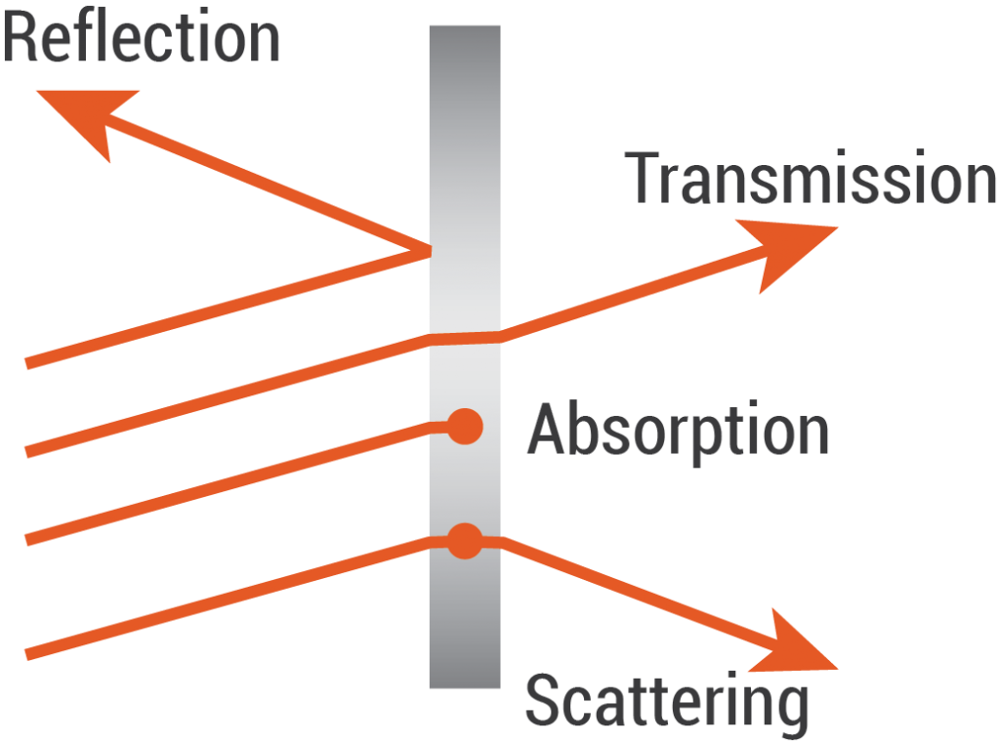

Tutorial 02: Material Reflection-aware D2NNs Co-Design¶
Reflection-aware D2NNs (THz)¶
Author: Minhan Lou, Yingjie Li (shellylou@github,lyj1201@github)
TBD
{kind=link}
import os
import csv
from time import time
import random
import pathlib
import argparse
import numpy as np
from tqdm import tqdm
import pandas as pd
import torch
import torchvision
import torch.nn.functional as F
from torchvision import transforms
from torch.utils.data import DataLoader
import matplotlib.pyplot as plt
import pickle
import lightbridge.layers as layers
import lightbridge.utils as utils
## This is an example of implementing D2NN with uniform reflection
class Net(torch.nn.Module):
def __init__(self, sys_size = 200, distance=0.04, num_layers=2,relist=[0.0,1/3], amp_factor=40.0):
super(Net, self).__init__()
self.amp_factor = amp_factor
self.size = sys_size
self.distance = distance
# layers.DiffractiveLayerRaw_Reflect is the reflection-aware diffractive layer
# rE is the reflection index
self.diffractive_layers = torch.nn.ModuleList(
[layers.DiffractiveLayerRaw_Reflect(size=self.size, distance=self.distance,
rE=relist[i],amplitude_factor=1.0, phase_mod=True) for i in range(num_layers)])
self.last_diffraction = layers.DiffractiveLayerRaw_Reflect(size=self.size, distance=self.distance, rE=0.0,
amplitude_factor=1.0,phase_mod=False)
# 200 by 200 system siz det designe
#self.detector = layers.Detector(start_x = [46,46,46], start_y = [46,46,46], det_size = 20,
# gap_x = [19,20], gap_y = [27, 12, 27])
ratio = sys_size/200.0
x1 = int(46*ratio)
y1 = x1
ds = int(20*ratio)
gapx1 = int(20*ratio)
gapy1 = int(27*ratio)
gapy2 = int(12*ratio)
self.detector = layers.Detector(start_x=[x1, x1, x1], start_y=[y1, y1, y1], det_size=ds,
gap_x=[gapx1, gapx1], gap_y=[gapy1, gapy2, gapy1])
def forward(self, x):
x = x * self.amp_factor
for index, layer in enumerate(self.diffractive_layers):
x = layer(x)
x = self.last_diffraction(x)
output = self.detector(x)
return output
Then, the training code is similar to Tutorial 1 (see full training code at the bottom). The training setups are included below (all default).
# training setups
parser = argparse.ArgumentParser()
parser.add_argument('--batch-size', type=int, default=300)
parser.add_argument('--epochs', type=int, default=5)
parser.add_argument('--seed', type=int, default=42)
parser.add_argument('--dataset', type=str, default="mnist", help='define train/test dataset (mnist, cifar10, cifar100)')
parser.add_argument('--lr', type=float, default=0.05, help='learning rate')
parser.add_argument('--depth', type=int, default=2, help='number of fourier optic transformations/num of layers')
parser.add_argument('--whether-load-model', type=bool, default=False, help="load pre-train model")
parser.add_argument('--evaluation', type=bool, default=False, help="Evaluation only")
parser.add_argument('--start-epoch', type=int, default=0, help='load pre-train model at which epoch')
parser.add_argument('--model-name', type=str, default='_model.pth')
parser.add_argument('--model-save-path', type=str, default="./saved_model/")
parser.add_argument('--result-record-path', type=pathlib.Path, default="./result.csv", help="save training result.")
parser.add_argument('--lambda1', type=float, default=1, help="loss weight for the model.")
parser.add_argument('--sys-size', type=int, default=400, help='system size (dim of each diffractive layer)')
parser.add_argument('--distance', type=float, default=0.08, help='layer distance (default=0.1 meter)')
parser.add_argument('--precision', type=int, default=20, help='precision (# bits) of the phase/intensity of given HW (e.g., 2**8 intervals)')
parser.add_argument('--amp-factor', type=float, default=60.0, help='regularization factors to balance phase-amplitude where they share same downstream graidents')
# example of using code tutorial_03_reflect.py; training setups are all default parameters defined in tutorial_03_reflect.py
python tutorial_03_reflect.py
# partial log
Epoch 1/5 : Training: 100%|█| 200/200 [01:24<00:00, 2.38it/s, Train_Loss=0.75, Train_Accuracy=0.535
Model : "./saved_model/1_model.pth" saved.
Epoch 1/5 : Validating: 100%|█| 34/34 [00:12<00:00, 2.79it/s, Val_Loss=0.31252, Val_Accuarcy=0.7622
Epoch 2/5 : Training: 100%|█| 200/200 [01:24<00:00, 2.38it/s, Train_Loss=0.30, Train_Accuracy=0.769
Model : "./saved_model/2_model.pth" saved.
Epoch 2/5 : Validating: 100%|█| 34/34 [00:16<00:00, 2.03it/s, Val_Loss=0.28511, Val_Accuarcy=0.7739
Epoch 3/5 : Training: 100%|█| 200/200 [01:33<00:00, 2.14it/s, Train_Loss=0.25, Train_Accuracy=0.807
Model : "./saved_model/3_model.pth" saved.
Epoch 3/5 : Validating: 100%|█| 34/34 [00:14<00:00, 2.27it/s, Val_Loss=0.17109, Val_Accuarcy=0.8710
Epoch 4/5 : Training: 100%|█| 200/200 [01:12<00:00, 2.75it/s, Train_Loss=0.16, Train_Accuracy=0.874
Model : "./saved_model/4_model.pth" saved.
Epoch 4/5 : Validating: 100%|█| 34/34 [00:12<00:00, 2.62it/s, Val_Loss=0.16227, Val_Accuarcy=0.8739
Epoch 5/5 : Training: 100%|█| 200/200 [01:13<00:00, 2.72it/s, Train_Loss=0.06, Train_Accuracy=0.961
Model : "./saved_model/5_model.pth" saved.
Epoch 5/5 : Validating: 100%|█| 34/34 [00:13<00:00, 2.48it/s, Val_Loss=0.04896, Val_Accuarcy=0.9701
run time 478.90883708000183